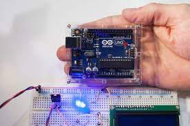

O Arduino encontra uma variedade de aplicações em diferentes campos, desde projetos de automação residencial, onde controla luzes e sistemas de segurança, até em robótica, onde é utilizado para controlar movimentos e interações. Além disso, é comum em projetos educacionais, ajudando estudantes a entenderem conceitos de eletrônica e programação de forma prática. Na indústria, o Arduino é utilizado em prototipagem rápida de produtos e em sistemas de monitoramento e controle. Também é usado em projetos de arte interativa, criando instalações que respondem a estímulos do ambiente. Sua versatilidade e acessibilidade fazem dele uma ferramenta valiosa em uma ampla gama de aplicações criativas e práticas.
